Les Intelligences Artificielles
Travaux personnels encadrés
2014 - 2015
Groupe : Ryan LAHFA, Antoine PIRARD, Cédric BYSZEWSKI
C'est quoi une Intelligence Artificielle ?
En 2015, notre quotidien est remplis d'intelligences artificielles (abregé IA).
Certaines contribuent à rendre notre quotidien plus simple.
D'autres créent notre avenir.
Ou préparent notre destruction?
Dans la littérature
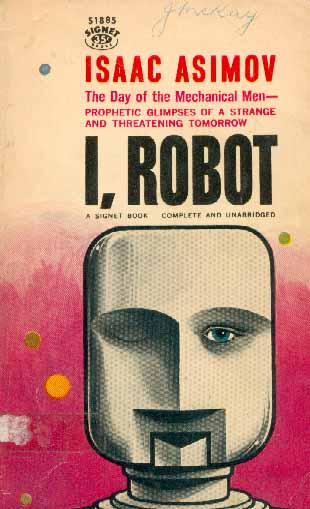Dans le cinéma
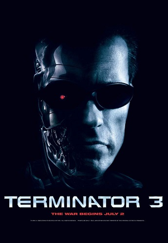Dans la musique
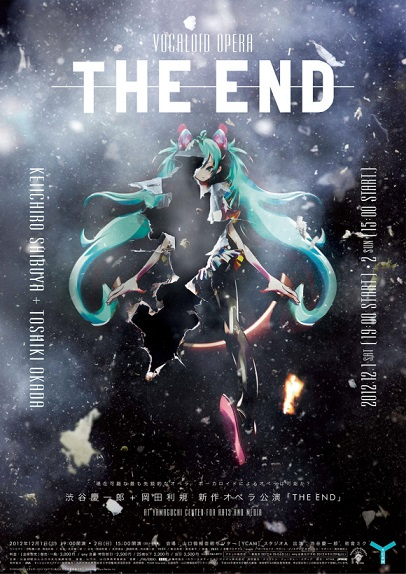Dans la vie réelle
Pour les développeurs
function searchPath(currentNode, targetNode) {
if (currentNode == targetNode) {
return;
}
pathFrom(currentNode).forEach(function (path) {
return searchPath(path, targetNode);
});
return null;
} Comment résoudre les problèmes du quotidien à l'aide des IA?
- Un concours d'intelligence artificielle : Vindinium
- Une IA pour assister la lecture
- Une IA pour aider les déficients visuels
Un concours d'intelligence artificielle
Comment créer une intelligence artificielle?
Le concours d'IA : Vindinium
Vindinium est un concours d'intelligence artificielle ouvert à tous.
Le concours se présente sous forme d'un jeu avec des règles où tous les joueurs doivent faire affronter leurs bots (IA) contre celles des autres joueurs lors de matchs.
 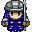
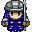
La naissance du bot Arch
Arch est le nom de notre bot dans ce concours, écrit en Python.
Nous avons appris tout au long de ce concours :
- Comment une intelligence artificielle est construite
- Les algorithmes qu'on utilise lorsqu'on crée un véritable programme
- Les méthodes ou les modèles utilisés quand on code des intelligences artificielles
L'apprentissage humain
Apprendre pour les êtres humains se fait de manière intuitive, toutefois, on peut en tirer un schéma.
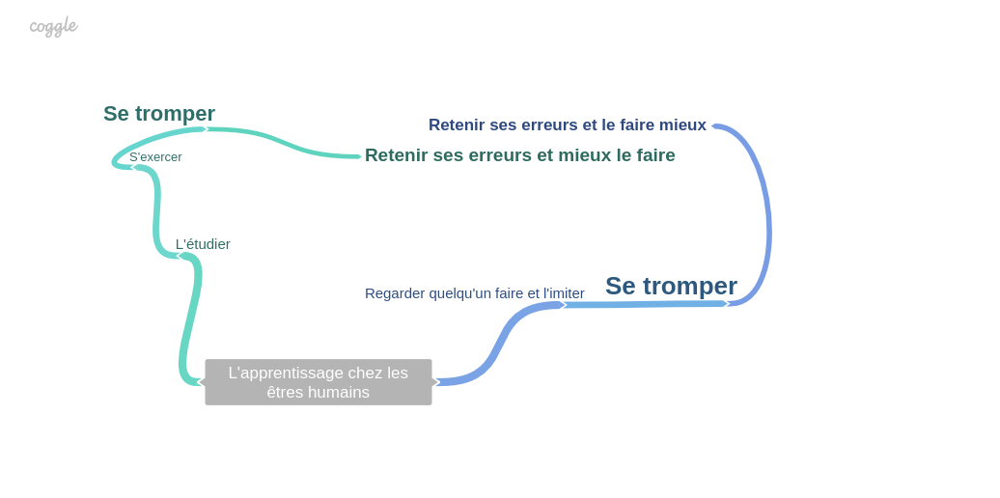Le voyageur de commerce
C'est un problème typique en algorithmie qui demeure encore difficile à résoudre en temps raisonnable.
C'est le problème que Vindinium nous propose d'approcher à travers son concours présenté de manière ludique.
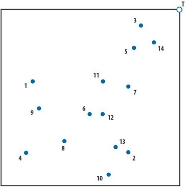Notre approche
Nous avons fini par approcher le problème en utilisant un algorithme génétique où notre personnage effectuait n'importe quel décision, et chaque décision était mémorisé, puis nous regardions le résultat de cette décision.
C'est à dire, à chaque fois que cette décision nous menait à la mort, ou à la perte d'or (pénalité), nous la considérions mauvaise.
Toutefois, à chaque fois qu'elle était bonne, on la favorisait lors de nos prochaines décisions.
Certes, malgré notre stratégie, nous n'avons pas pu vaincre d'autres intelligences artificielles (qui ont sûrement plus d'entraînement que les nôtres). Mais, ce fut amusant tout de même! Nous avons réussi à gagner quelques matchs.
Une intelligence artificielle pour assister la lecture
Comment aider les personnes qui ont des problèmes de lecture?
Faire lire du texte à une intelligence artificielle
Lire pour les IA est un problème complexe,
En effet il demande à la machine d'être capable :
- Séparer les lettres
- Reconnaître leur forme
- Trouver les espaces
- Analyser les symboles
Les programmes qui en sont capables sont appelés OCR.
Les OCR
Un OCR (Optical Character Recognition) est un moteur capable de transformer une image qui contient du texte en un véritable fichier texte.
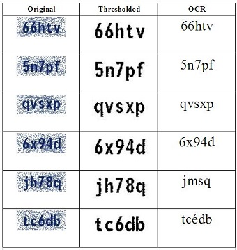Des exemples de moteurs OCR
Tesseract est un moteur d'OCR developpé par les laboratoires d'HP entre 1985 et 1995.
Aujourd'hui, il est developpé chez Google depuis 2006.
Il est disponible en licence Apache 2.0 (open-source)
Il s'agit l'un des meilleurs moteurs d'OCR dans le monde, beaucoup de produits l'utilisent en interne.
Comment ça marche?
La plupart du temps, un moteur d'OCR emploie un système d'apprentissage par entraînement.
Ceci permet d'améliorer la reconnaissance de caractères de l'OCR (que ce soit manuscrit, ou imprimé).
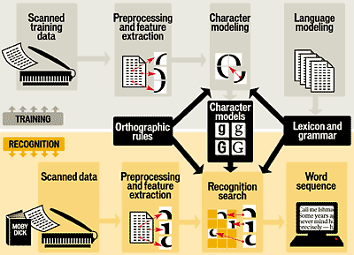Les réseaux de neurones
Les réseaux de neurones est un modèle de calcul dont le fonctionnement est proche du fonctionnement biologique des neurones.

Notre approche
Nous avons essayé à l'aide d'une caméra de réaliser une reconnaissance optique (presque temps réel) sur les images de cette caméra.
Le prototype a de bons résultats sur les textes imprimés, cependant, il est incapable de lire du manuscrit (pour des raisons de complexité).
Le texte, lu par l'OCR est ensuite lu par un synthétiseur vocal. Idéalement, cette intelligence artificielle devrait pouvoir fournir une accessibilité amélioré aux personnes à faible acuité visuelle.
Une intelligence artificielle pour les déficients visuels
Comment aider efficacement des personnes atteintes de daltonisme à percevoir le monde comme les autres?
Le daltonisme
Le daltonisme est une anomalie qui empêche de percevoir certaines couleurs.
Cette anomalie s'explique par l'absence d'un ou plusieurs des trois cônes responsables de la perception des couleurs.
Quelles couleurs perçoivent les daltoniens?
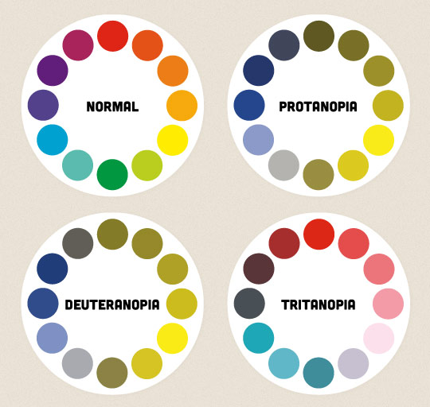Une vision “ daltonienne ”
Comment savoir si quelqu'un est atteint de daltonisme?
En réalité, tous les daltoniens ont des perceptions uniques.
Toutefois, on peut classer les daltoniens en fonction du cône qui leur est déficient :
- Protanope
- Deutéranope
- Tritanope
Le test d'Ishihara
Ce test permet à l'aide d'images de dépister les anomalies visuels chez une personne.
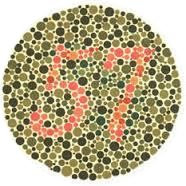 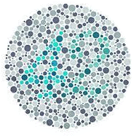 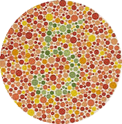Notre approche
Notre but était de faire une extension de navigateur capable d'appliquer une filtre sur les sites Internet en fonction de la déficience de l'utilisateur.
Toutefois, par manque de temps, nous n'avons pas pu implémenter les filtres correcteurs (qui étaient des matrices de couleurs).
Idéalement, nous avons conçu un prototype capable à l'aide de quelques questions de trouver la déficience visuelle de quelqu'un en se basant sur le test d'Ishihara.
Notre réalisation finale
Le mot de la fin
Les intelligences artificielles ont un vaste champ d'application, et leur nature même nous permettent d'accéder à des interactions, autrefois inaccessibles.
Il est clair que si leur utilisation se fait à bon escient, leur développement pourrait bouleverser notre monde et nous propulser ainsi dans une nouvelle ère moderne digne des films de science-fiction.
Mais il faut faire attention à ne pas plonger dans la dystopie.
Questions?
Remerciements
Merci à toutes les sources que nous avons utilisé, sans quoi nous n'aurions pas eu grand chose à dire.
Merci à M. Picard et Mme. Mignondo, nos professeurs de TPE, qui nous ont permis d'entreprendre et réussir ce TPE dans les meilleures conditions
Merci aux équipes derrière Python, JavaScript, Reveal.js, Vindinium.
Sans qui, notre TPE serait complètement abstrait, et sans intérêt.
Et surtout, merci aux examinateurs, qui assistent à la présentation de nos travaux.